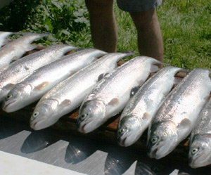

Wägitaler Regenbogenforelle
6 von 6Man nehme 3 Freunde, einen Toyota Celica, reichlich alkoholische Getränke, Fischerutensilien sowie genügend Rotwürmer und Maden (für ein adäquates Boquet). Man treffe sich um Samstag morgens 3 Uhr und fahre an den Wägitaler Stausee. Nach einer längeren Prozedur erlange man das Fischerpatent sowie das Motorboot. Danach werden fleissig Bach- und Regenbogenforellen aus dem See gezogen. Diese können vor Ort oder am nächsten Montagsplausch gegrillt, mit etwas Salz, Pfeffer und Olivenöl verzehrt werden.
